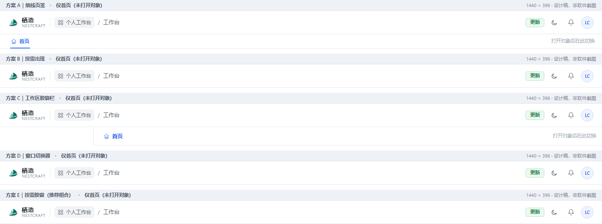
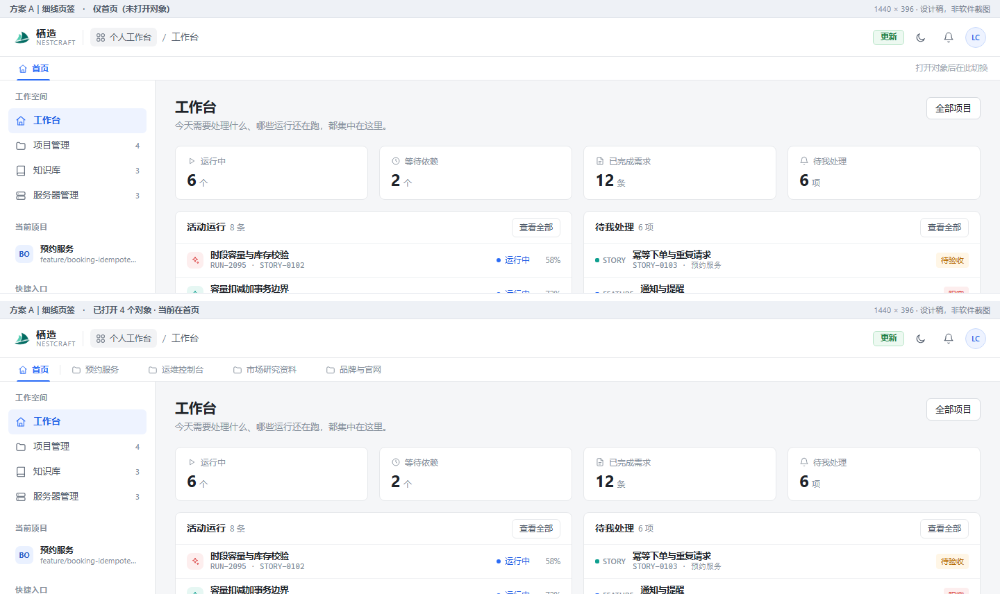
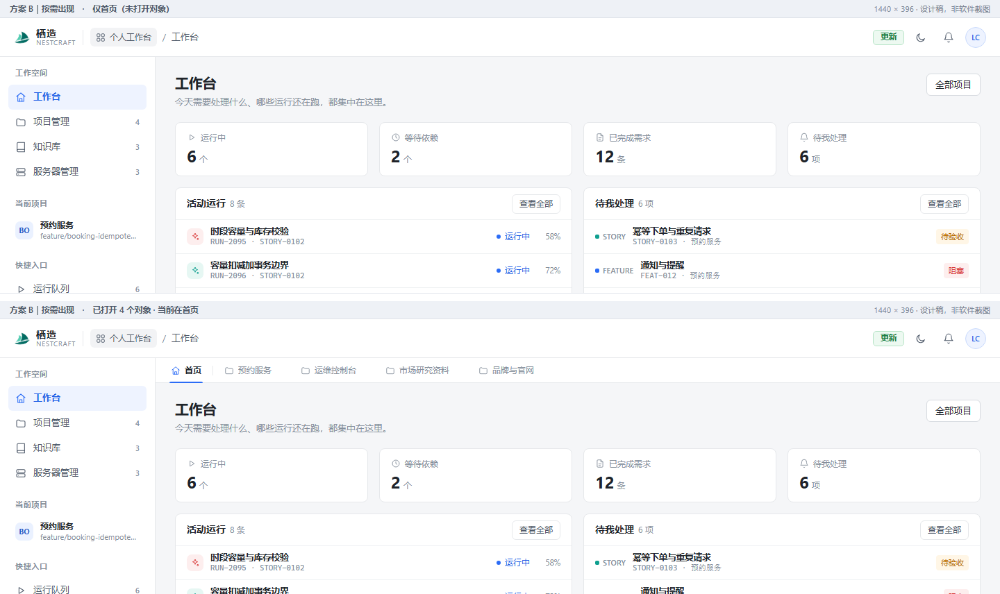
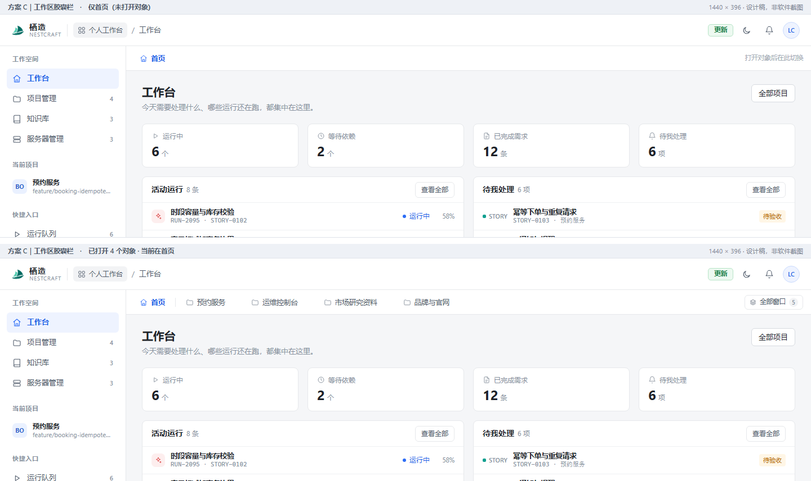
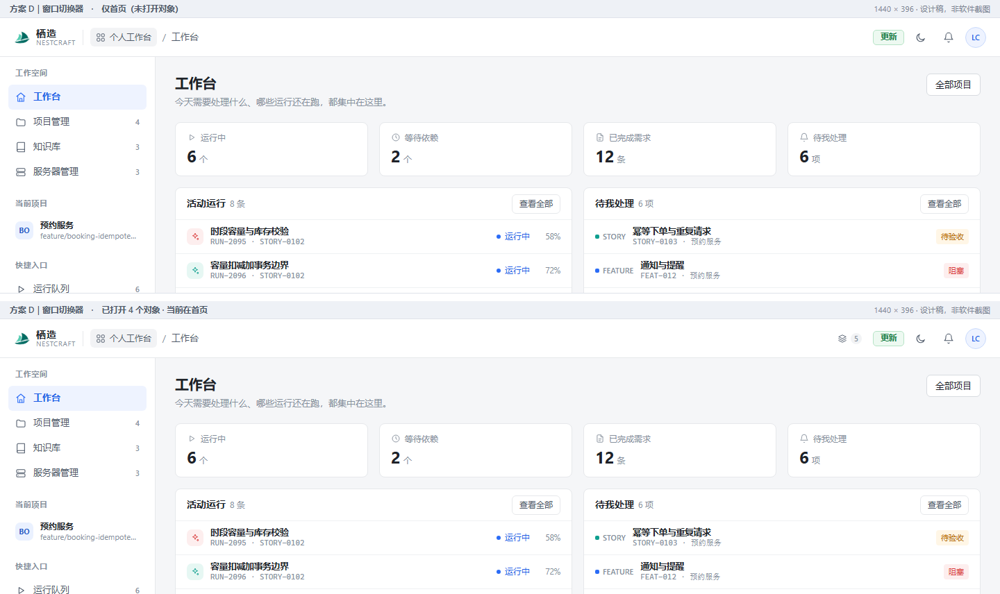
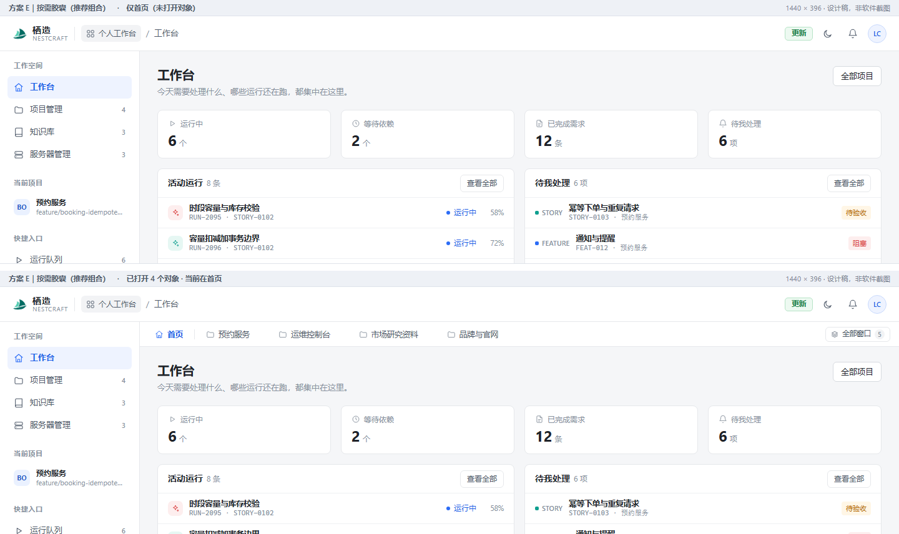
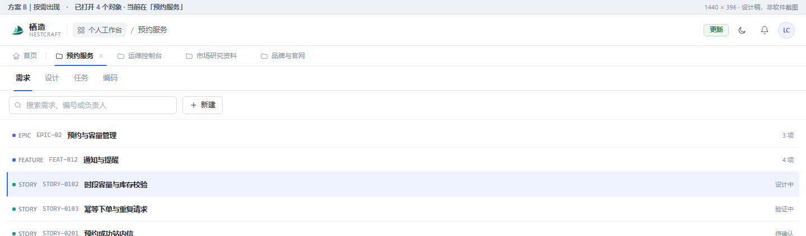
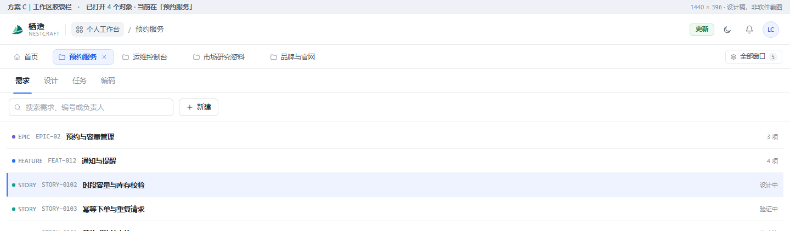
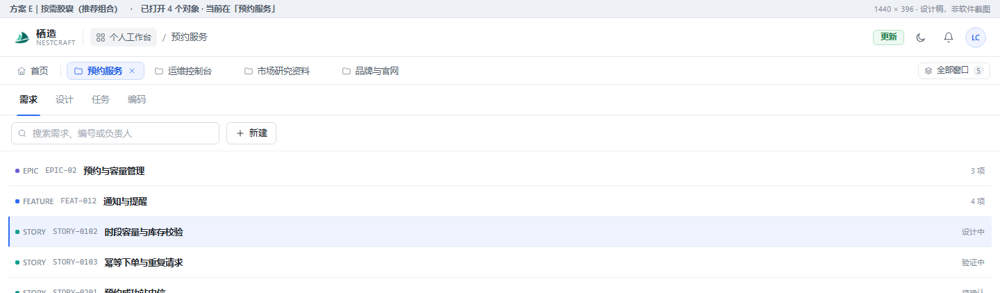

A
细线页签
最小改动页签条仍横跨左侧导航上方，只换样式：40→34px、去掉灰底与文件夹造型、选中改为文字 + 2px 底线，首页与对象之间加一条细分隔线；仅一个页签时右侧显示一句极弱提示。

优点改动面最小、结构不变、风险低；多页签时一眼能扫。
代价仍常驻 34px；单页签时右侧靠提示文案撑场面，本质还是「一条只有首页的条」。

B
按需出现
最干净首页不占条：没打开对象时整条不渲染，内容直接接顶栏。打开对象后才在内容区顶部出现 36px 页签条，第一个是「首页」（点击返回），对象关闭到 0 个时条带自动消失。侧栏只在当前窗口是对象时隐藏。

优点单页签问题彻底消失；条带只在内容区上方，与侧栏不错位；最接近专业桌面工具。
代价打开/关闭最后一个对象时页面会上下位移；「首页」作为窗口的可见身份变弱。


C
工作区胶囊栏
最有形态条带移入内容区，44px 白底，首页与对象统一为 28px 胶囊位：选中只做文字/图标高亮（无底色、无边框、无下划线），未选中是纯文字；首页后加竖分隔，右侧留工具区（单页签时提示，多页签时「全部窗口 N」）。

优点即使只有一个胶囊也像完整控件，不空格；层级清楚、可点面积大；与现有白蓝语言一致。
代价44px 最高；胶囊比下划线重，密集多页签时略挤；右侧工具区需要定义真实功能。


D
窗口切换器
最极简没有页签条。顶栏面包屑承担切换：打开对象后变成 个人工作台 / 首页 / 预约服务 ⌄，点「首页」返回、点对象名展开全部窗口下拉；右上角图钉图标显示窗口数。仅首页时顶栏与现状完全一致。

优点零占位，信息密度最低；窗口都收起在一处，不会出现一排洗不掉的标签。
代价切换要两次点击；并行开多个对象时看不到全貌，关闭入口藏得深。

E
按需胶囊（B + C 组合）
推荐首页不占条，打开对象后才在内容区顶部出现 40px 胶囊条：首页与对象同规格，选中只做文字/图标高亮（无底色、无边框），首页后加竖分隔，右侧「全部窗口 N」。它同时拿到 B 的「单页签不空」与 C 的「一个页签也成立」。

优点首页状态零占位；打开对象后才付 40px；胶囊形态在 1 个对象时也不空；与 B、C 的实现都可复用。
代价需要接受打开首个对象时的一次布局位移；右侧「全部窗口」需要定义真实行为（列表 / 仅溢出）。


对象激活时
B / C / E 会隐藏左侧工作空间导航，把宽度让给对象


怎么选
- 只想不丑、别动结构 → A：改动集中在
.tabbar与.wtab两个选择器，风险最低。 - 要最干净、能接受条带按需出现 → B：首页状态没有条，代价是打开首个对象时一次位移。
- 想要工作区的可点感和现代感 → C：44px 常驻，需要一并确定右侧工具区放什么。
- 对象通常只开 1～2 个、更在意零占位 → D：切换要两次点击，关闭入口藏在下拉里。
- 想要又干净又不空 → E（推荐）：B 的时机 + C 的形态，首页零占位、打开对象 40px 胶囊条。